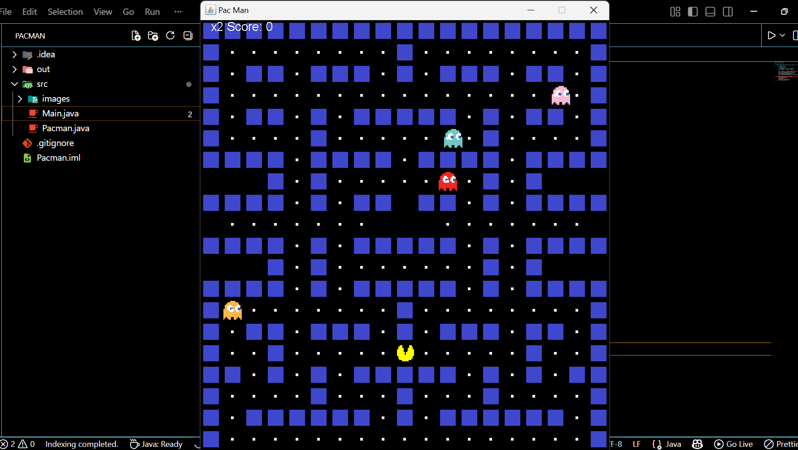
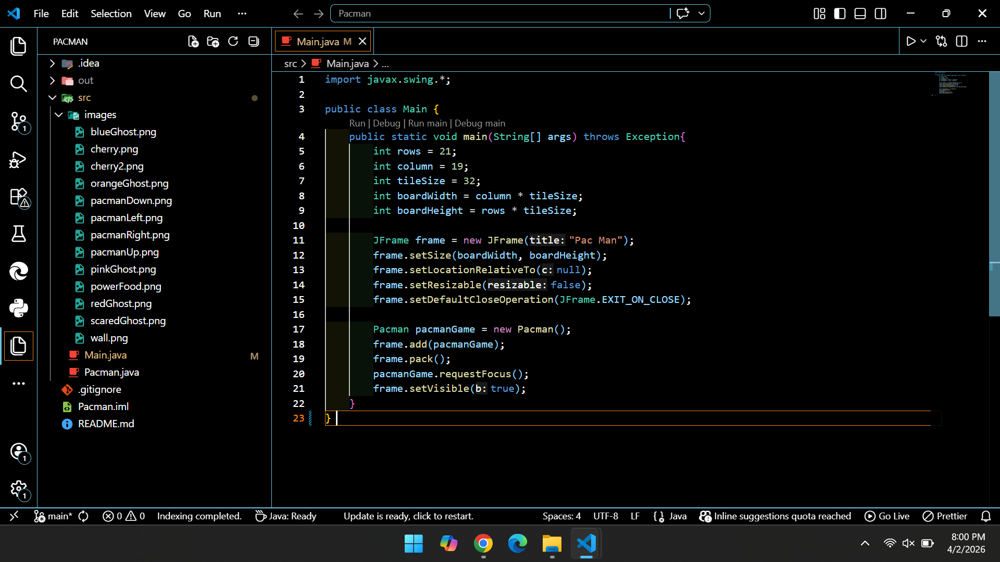

Software Development
Java Pacman Game


OVERVIEW
For this project, I developed a custom 2D game engine to recreate the classic Pac-Man experience. Instead of using a dedicated game engine, I built the entire system using the Java Swing and AWT libraries. The project focuses on real-time game loop management, collision detection algorithms, and dynamic sprite rendering to create a smooth, responsive arcade experience.
KEY FEATURES
- Dynamic Tile Mapping: Implemented a string-based tileMap system that allows for easy level design and layout modifications by translating characters into game blocks (Walls, Food, Ghosts, and Pac-Man).
Collision Detection System: Developed a custom collision() method to handle AABB (Axis-Aligned Bounding Box) logic, preventing entities from passing through walls and managing interactions between Pac-Man, food, and ghosts.
Automated Ghost AI: Integrated a randomized movement system for the four distinct ghosts (Blinky, Pinky, Inky, and Clyde), ensuring they navigate the maze independently without overlapping with wall tiles.
Input Handling: Implemented a KeyListener to capture real-time user input, allowing for directional changes and game resets upon a "Game Over" state.
WHAT I LEARNED
- Object-Oriented Design (OOP): This project was a deep dive into class structures. I learned how to use inner classes (like Block) to encapsulate data for game entities, making the code more modular and easier to manage.
Event-Driven Programming: Working with ActionListener and KeyListener sharpened my understanding of how software handles asynchronous user actions while maintaining a steady internal logic flow.
Debugging Real-Time Systems: Diagnosing logic errors in a running game loop taught me how to effectively track state changes, such as why a ghost might stop moving or why collision isn't triggering correctly on specific frames.
TOOLS USED
Java
Swing